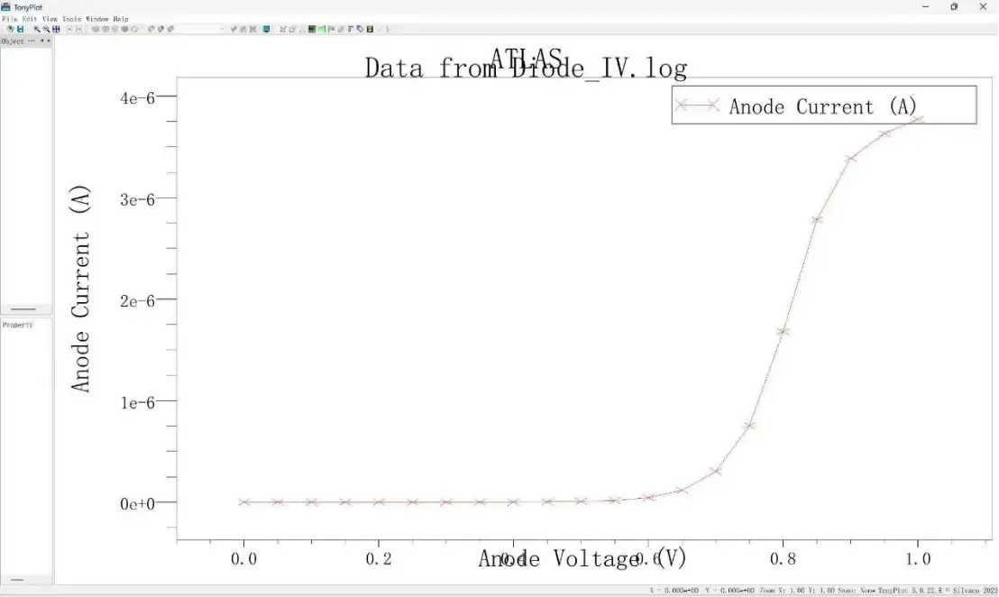

一、启动Athena工艺仿真模块
01 网格定义（Mesh）
通过定义x,y方向的网格节点分布，为后续结构建模提供几何网络基础。
（每个节点都会存储对应位置的材料类型、掺杂浓度、电势等数据，是仿真器进行物理计算的数据锚点）
line x loc=0.0 spacing=0.1
line x loc=0.1 spacing=0.1
line y loc=0 spacing=0.02
line y loc=2.0 spacing=0.20 （默认单位为微米）
02 初始化衬底，离子注入（掺杂）
设置衬底，并设置初始掺杂磷离子的浓度，以构成n型衬底
再用implant（注入）命令注入剂量为1×10¹⁵ cm⁻²，注入能量为70keV，在N型衬底表面形成P型掺杂区域
init silicon c.phos=1.0e14 two.d
implant boron dose=1e15 energy=70
03 退火热扩散
执行 diffuse(扩散)命令进行热扩散，在1000℃温度下处理30分钟，使注入的硼杂质在硅衬底中进行热迁移，实现杂质的均匀分布与结深调控。
diffuse time=30 temperature=1000
04 PN结结深提取
结深：指P型和N型掺杂区域的交界面到半导体表面的垂直距离
通过 extract（提取）命令提取PN结的结深（此处变量名为 xj ）
extract name="xj" xj silicon mat.occno=1 x.val=0.0 junc.occno=1
mat.occno: 材料区域编号
x.val: x轴坐标，表示在x=0的截面上进行提取
junc.occno: 结区编号
05 导出结构文件并使结构可视化
将当前工艺结构导出为 pnjunction.str文件，文件包含包含几何形状、掺杂分布的工艺结构数据。
执行 tonyplot 命令调用可视化工具，加载 pnjunction.str 文件，实现工艺结构的图形化展示
下图为构建的PN结结构示意图：
二、启动Atlas器件仿真模块
01 导入之前的结构文件
执行init infile命令导入pnjunction.str文件，将Athena生成的PN结模型加载至Atlas仿真环境。
init infile="pnjunction.str"
02 定义电极
通过electrode命令定义器件电极，在结构顶部定义阳极，底部定义阴极，为电学特性仿真提供偏压施加端口。（此处以正偏为例）
electrode name=anode top
electrode name=cathode bottom
03 物理模型配置
执行models命令启用核心物理模型，包括载流子温度模型（cvt）、Shockley-Read-Hall复合（srh）、 俄歇复合（auger）、带隙变窄（bgn）、费米统计（fermi），并开启模型参数打印（print），为器件电学行为计算提供物理依据。
models cvt srh auger bgn fermi print
04 初始化并记录数据
执行solve init命令完成器件的初始稳态求解，将器件置于零偏压的平衡状态。
执行log outfile命令指定仿真数据输出文件为Diode_IV.log，用于存储后续偏压扫描过程中的电学特性数据。
05 偏压扫描（以正偏为例）
执行一系列solve vanode命令，将阳极电压从0.0V逐步增加至1.0V（步长0.05V）， 依次求解各偏压下的器件电学特性，获取PN结的正向IV曲线数据。然后关闭日志。
solve vanode=0.0
solve vanode=0.05
solve vanode=0.1
……
solve vanode=1.0
log close
06 导出仿真数据并可视化
执行tonyplot命令调用可视化工具，加载Diode_IV.log文件，实现IV曲线的图形化展示。
正偏扫描得到的IV曲线图：
反偏扫描得到的IV曲线图：

三、用到的物理模型解释
01 cvt（Carrier Temperature Model）
载流子温度模型，用于模拟载流子（电子、空穴）的温度变化（区别于晶格温度），适用于大电流、高电场等场景（如功率器件），能更精准地描述载流子的输运特性。
02 srh（Shockley-Read-Hall）
Shockley-Read-Hall复合模型，描述非平衡载流子通过复合中心的复合/产生过程，是多数常规器件（如PN结、MOS管）的基础复合模型，决定了器件的漏电流、开关速度等特性。
03 auger（Auger）
俄歇复合模型，描述载流子之间的碰撞复合过程（如电子-空穴-电子的碰撞），通常在高掺杂区域或大注入条件下起主导作用，会影响器件的饱和电流、击穿特性。
04 bgn（Band Gap Narrowing）
带隙变窄模型，描述高掺杂导致半导体带隙减小的现象，高掺杂区域（如PN结的重掺杂区）必须启用该模型，否则会导致IV曲线、阈值电压等仿真结果与实际偏差较大。
05 fermi（Fermi Statistics）
费米统计模型，启用后载流子浓度的计算会遵循费米-狄拉克分布（而非低掺杂下的玻尔兹曼近似），适用于重掺杂区域（载流子简并化的场景），能更准确地描述高掺杂下的载流子浓度。
四、对仿真模型的反思
01 模型优点
- 流程规范，覆盖了“网格定义→材料初始化→掺杂→扩散→结构提取→电极设置→器件仿真→IV扫描”的完整PN结仿真流程。
- 经过反复调试，在Tonyplot中成功生成了可视化的模型示意图和IV曲线图。
- 搭建的模型具有通用性，能够通过调整各种参数（如掺杂浓度、扩散时间的温度等），生成多组数据进行比对和拟合。
02 模型缺点
- 在仿真领域经验不足，得出的IV曲线图以及数据无法精准地契合理想状态。不过误差部分也为我们提供了很好的学习材料，我们通过查取资料，对其进行了很好的解释。
- 物理知识储备较少，对多种物理模型的应用可能存在不足之处。
- 初次撰写脚本，可能在部分地方稍有冗杂之处，如电压扫描部分等。
注释：
为了达到更好的拟合效果，我们先后对模型的参数进行了多次修改，如网格的疏密、硼离子的掺杂浓度、退火的温度和时间、使用的物理模型、 电压扫描的区间和步长等等，产生了多组文件和数据。这里挑选较为原始的一版作为示例，其余版本因结构类似、本质相同而不再赘述。
点击下方按钮下载完整的仿真脚本文件。
下载脚本下载学术报告：
点击下方链接下载本实验的学术报告简要说明。
点击下载学术报告网站导航
点击对应模块进入对应子网页！
首页
返回网站的首页。
实验总体介绍
当前页面，提供背景、目标和总体流程说明。
TCAD 模型过程展示
展示 TCAD 模型的搭建过程和相关细节。
I-V 曲线参数
交互式查看 I-V 曲线在不同参数下的变化。
网络搭建思路
介绍了实验数据的收集和网站搭建过程。
总结与致谢
查看本项目的总结与致谢内容。